来源：https://z007z3n6q6.feishu.cn/docx/V1tLdYFecoPwHVxcDZUc0ZtcnKf
大家好，我是唐威，曾经在视频号领域摸索无果，如今通过矩阵式视频号玩法，仅用40天便实现13万佣金（GMV21w）成绩。
下面是我的部分GMV截图。
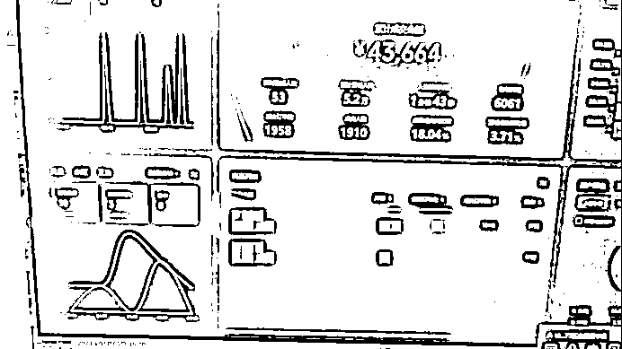
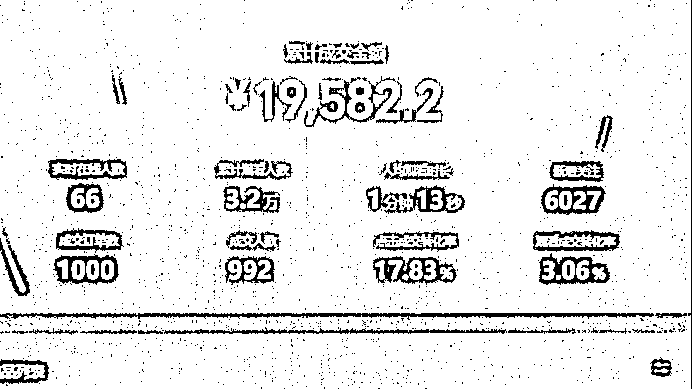
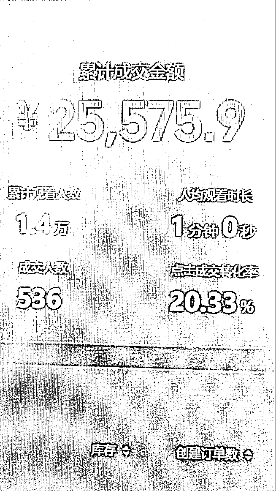
其实我是在去年12月取得的这样的成绩，不过由于各种原因，当时没有把我的经历分享出来。
前几天，我的账号又爆了一次。
伙伴们都很好奇，我是如何做到能持续爆单、持续出好成绩的？
我想了很久。
我想起来，在生财待了这么久，总是会看到很多人纠结内耗，不知道是该不断换项目来找到合适的，还是深耕一个项目。其实我也没有很确定的答案，但是我的故事或许可以给大家一些启发与参考。
那个看似做事情顺利到离谱的人，同样经历过卡壳的状态。
经历了漫长的爬坡期，好几年憋着劲儿，慢慢打磨基本功，不知道多少回自我纠结、痛苦不堪，差点就想甩手不干了。
现在之所以看起来一切顺利，还是因为那些年一点点的积累。
大学时，机缘巧合之下，我接触到了无货源项目。
那时候，我也就是瞎摸索，也没有什么人带我，就这么到处琢磨，慢慢做起来。
当时是在拼多多上做的，主打食品类目。后来，我一个人忙不过来，也希望能有人和我一起做，就向几个要好的朋友发出邀请。聊了之后，他们觉得挺靠谱的，我们四个人就开始一起做。
经历了长达两年的摸爬滚打，也算是差不多做出了点成绩，小有心得。
再回顾，总结下来，做无货源，我们也犯过一些错，但是在满地红海的情况下，我们能够脱颖而出赚到钱，关键是会对标，对产品有敏感度。
第一点：学会找对标
抓住热门商品、了解同行的热门产品至关重要。
经过一段时间的产品练习，我慢慢学会了如何迅速锁定具有潜力的同行，深入学习他们的选品逻辑。卖得好的，一定有他的道理，那就值得我参考。
第二：对产品有敏感度
如果只是抄同行的爆款产品，照着做，那基本上没有太大希望。因为他们卖爆的产品，已经形成了垄断，我再想加入，也很难了。
所以，我要在了解同行的热门产品基础上，结合当下最新的情况，节日、特殊时期等，选择合适的产品，并抓住时间，快速出击。
慢慢地，我对产品是不是好的选品，也有了我自己的一些感觉。
但是没有做太久，无货源模式遭到了打击。政策上开始打压无货源模式，我们收到了同行、买家的投诉，电商平台的打击也越来越大。无货源模式的红利逐渐散去。
于是我们就决定转换赛道，试试新的项目。
我当时恰好看到小红书项目，看起来还不错，也不太难，就决定开始矩阵运营小红书账号，还创建了自己的工作室，专攻小红书平台的商单项目。
我们采取的策略是，小红书搬运娱乐类视频，快速涨粉，够1000粉丝以后，就可以接商家的广告单子。商单的价格一般在180元左右。
这个项目我们做了3个月，做了40个账号。
一开始我们还是很有信心的，我们不断计算着未来我们可以获得多少收益，兴奋极了。
但是现实又打了脸。
小红书涨粉较慢，起号慢，且账号生命周期短（一个账号最多20条广告，就不会给资源了，意味着这个账号就没有利用价值了)。
这种情况下，我们必须不断创建新账号、重复涨粉过程，运营成本高且可持续性较差。
而且后来官方也对我们进行了打击。
导致我们收入很少，但是成本却一点没有降低下来，渐渐地开始入不敷出，难以维持。
我们不得不另谋新的出路。
接着我就报了一个视频号训练营。但我当时，没有头绪，找不到方向。
那个训练营其实也挺好的，但是刚好不适合我。训练营教的是让我去找对标，去找视频找账号等。
但是因为其实我之前做小红书的时候，就摸索出来了找对标的方法，我不需要这些内容。
对我个人来说，我的困惑点在于——
我不知道要如何选品，不知道要如何选择赛道，不知道直播要注意什么，我每一步都有很大问题……
简而言之，我发现我好像这些理论都会，但是我一点都不知道如何下手。
这次经历很失败，可以说是没有取得任何成绩。
当时做视频号也不是很顺利，在迷茫纠结、不断尝试中，我遇到了孟总，他的独到见解和实战经验对我很有触动。
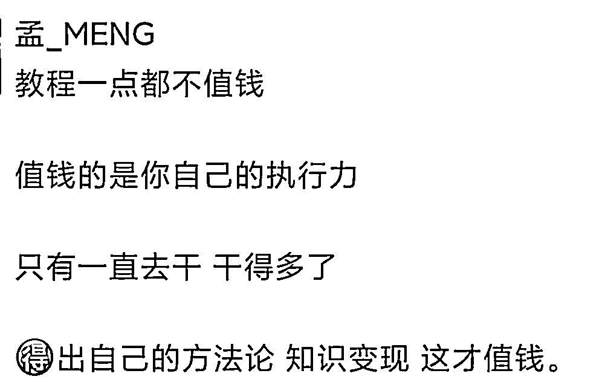
我直接被触动了。我很认可孟总的理念。
我之前的失败，其实也是因为，我自己的摸索能力并没有特别突出，但是我的执行力非常强。之前的训练营的模式也挺好，但是不太适合我。适合我的模式，其实就是“喂饭”，细节到位，我直接去做。
于是我就加入了孟总的项目。
再一次做视频号项目，整体起步还是很顺利的。
我刚好因为做过，本身就有账号，开展起来很顺利。而且，我自己是有剪辑基础的，上手更是非常快。
这边的教程很全面细致，再加上孟总的答疑，小到直播上的细节、挂链接处理、头像简介，大到数据监测，孟总都耐心解答。
我执行起来可以说是几乎没有任何困难。
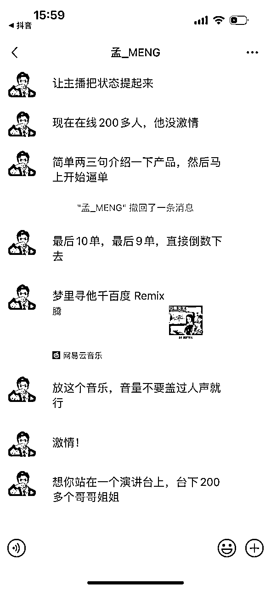
在我自己超强的执行力之下，我很快就拿到了成绩。
2023年12月26号，在加入的第3天，我就打出了5729.9的gmv。
28日，我就收到了3038的佣金。
一切都很顺利，开局我就拿到了还算不错的成绩。
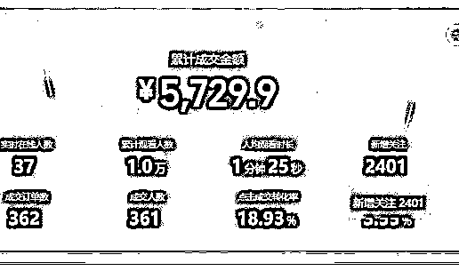
2024年1月9号，我直播，孟总全程在线，耐心指导，帮助我做完整场直播。
我不清楚放什么音乐、怎么播、贴纸换什么、视频怎么修改，孟总不断指导我如何改进……
孟总能预判我可能出现的问题，及时提醒，并不断跟进直播情况，让我直播能够顺利做下来。
最终成绩很不错，打出了43664的最高GMV。
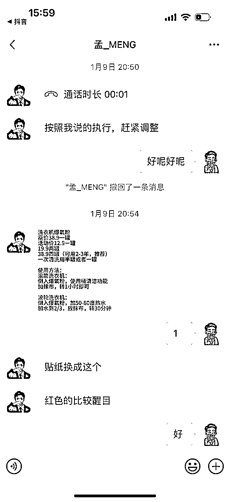
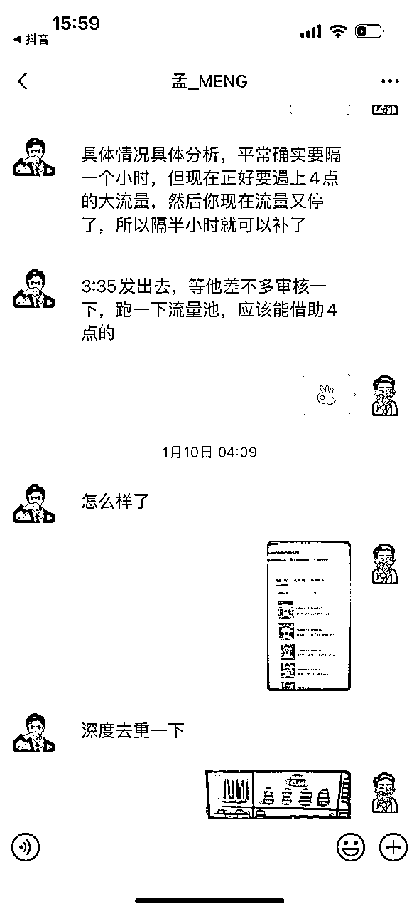
我又尝试好几次，流程越加熟练。1月12日，我拿到了27806的最高佣金。
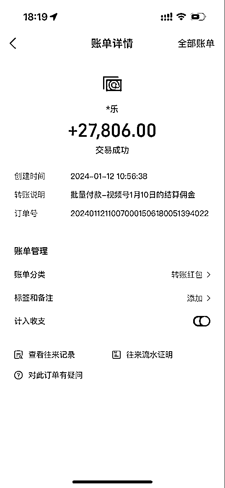
前期一路摸索，都比较顺利，幸运的天平向我倾斜。我也在这条路上继续探索。
相比搬运素材，实拍能够带来更多的收益。
一方面，实拍的视频，平台给到的流量更多；另一方面，我的素材如果被其他伙伴搬运，我也能获得分成。
所以我在初期搬运视频，拿到成果后，就不断摸索实拍。
后来实拍爆款概率在不断增加，我接连出现了好几个百万爆款。
到2月1号，我拿到了13w的佣金。
之后数据一直都还不错，开展还算顺利！
我也很幸运，得益于之前的经验，我在项目上网感不错。
虽然我这几个月经常有事情，视频拍得很少，但是孟总跟我说“我这样的成绩真的很好”，也说希望我能把账号做大，发挥我的独特优势。
所以3月份，我也整合了自己的小团队，放大了矩阵。
孟总说过：“账号越多，收入越高”。
我也越发相信，在视频号红利期，我们就是在“捡钱”。我对于做矩阵，做团队的信心更足了！
我慢慢做起来之后，意识到，这样还不够，我们可以做到更多。
于是我就做了更多账号，争取获得更多红利。
但是同时，我也遇到了一些瓶颈。在我做到40多个号的时候，我无法放大了。我没有账号了。我陷入了迷茫。
做到这里，真的就可以了吗？真的就够了吗？我还可以继续放大吗？
恰好此时，我看到了群里燕子的分享，我受到极大的启发。
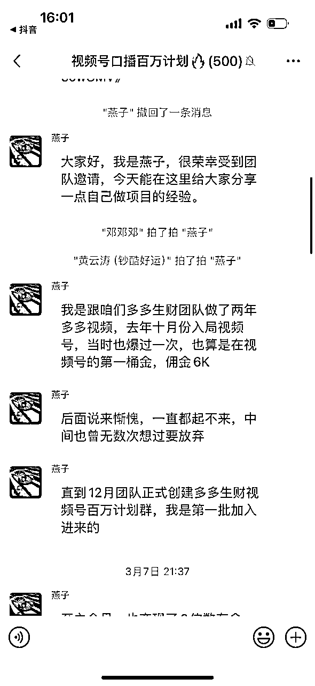
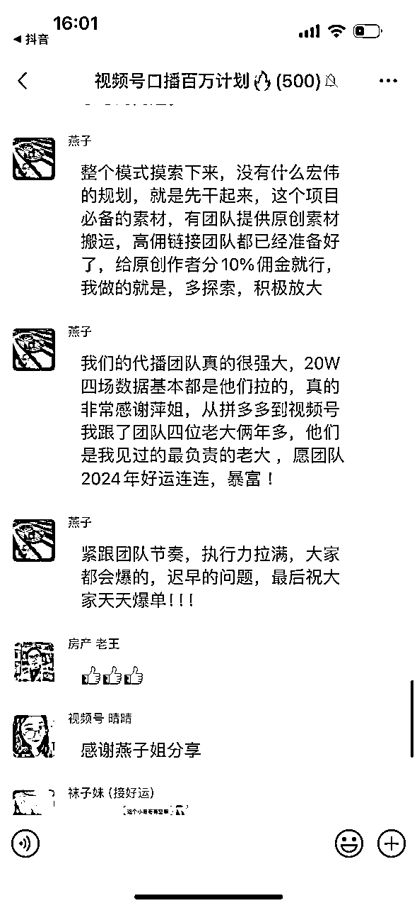
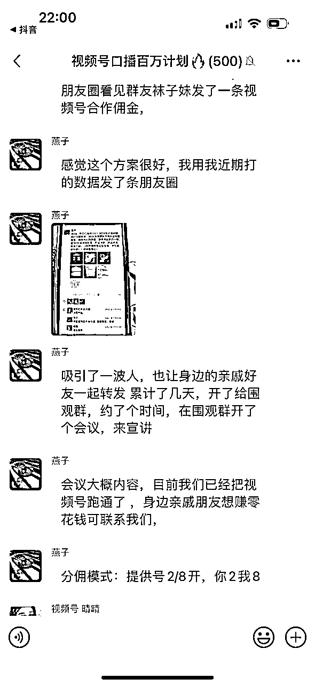
燕子分享的关于【放大】的做法，对我启发很大。
可以说是实实在在帮助我打开了思路。
自己没有账号，要学会从外界借力。要学会裂变的收入分成模式。
之前我们规模小，是因为设备、时间、精力等都受限。
但是实际上，我们不需要自己全部都做。
我们可以用别人的账号，采用分佣模式，这样双方受益，我这边好的视频素材也可以获得更大的收益。
自己的力量是局限的，要学会借助外力。
之后，在矩阵放大作用及外力作用下，我们数据一直很不错。我们越来越有希望。
4月，我们团队也将向百万GMV发起冲刺！
我曾经多次尝试项目，虽然并不是都很顺利，但是也没关系。
每一次尝试都是宝贵的经验积累。人生没有白走的路，每一步都算数。
虽然我并没有办法很清晰地说出来，这些项目对我到底有什么样的积累。
但是确实只有亲身经历过，我才能对商业世界的复杂性有更深刻的理解。
而且，所有的底层逻辑和项目思路都是相通的。
做过项目，赚到过第一桶金，后面再做其实会容易很多。
就拿视频号来说，要做起来，其中的几个关键环节就是选品、剪辑。
而恰好，我都做过，我都擅长。
做无货源时，我对于【紧跟市场潮流，响应市场变化】的选品思路感触不断加深，比如，春节期间，小炒酱、调味料等产品就很适合。
因此，在视频号这边，群里会发很多好的品，我可以根据我的经验和感觉，选出最适合我的产品，做出的数据都还不错。
而做小红书时，我们需要搬运视频、去重等，对于这些操作我都非常熟悉。
视频号带货这边，同样需要去重、剪辑，这些方面我很快就能上手，而且效果呈现都会很不错。
当然，当初在做无货源、小红书时，我不可能知道我是在为视频号项目做积累、学习能力。我只是在不断尝试，不断积累经验，虽然当时没有做成功，但是恰好遇到了孟总，恰好遇到了视频号的红利，我拥有的技能恰好派上用场。
人生没有白走的路，我的所有经历，都帮助我成为了今天的自己。
互联网创业的一大特点就是，瞬息万变。
我对我自己的执行力非常有信心，这也是我能拿到结果的重要的原因。
我看到有人说自己在拿到教程后，纠结彷徨，过了很久才开始，错过了很多机会。而我在拿到教程后，便迅速开始执行，于是便拿到了结果。
我做得好的地方，无非就是，我执行力超强。
事实证明，正是因为执行力拉满，我才能迅速取得成绩；正是因为执行力强，我们团队才能在短短时间内实现业绩飙升，不断刷新纪录。
执行力到位，一切都好说。
看起来我做项目挺稳的，一切顺利。
但是其实我在做的过程中也很着急。
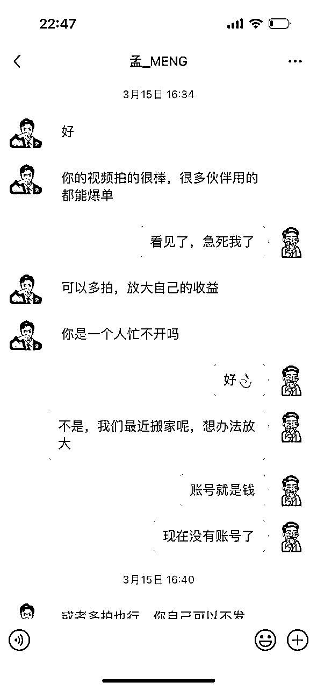
因为刚好家里搬家，还有一些其他事情，实在抽不开身，我拍视频的时间少之又少。
看到群里的小伙伴们都不断在刷新成绩，我也很着急。我很担心我错过机会。
但是着急也没用，我什么都做不了。
后来孟总跟我说——
流水不争先，争的是滔滔不绝
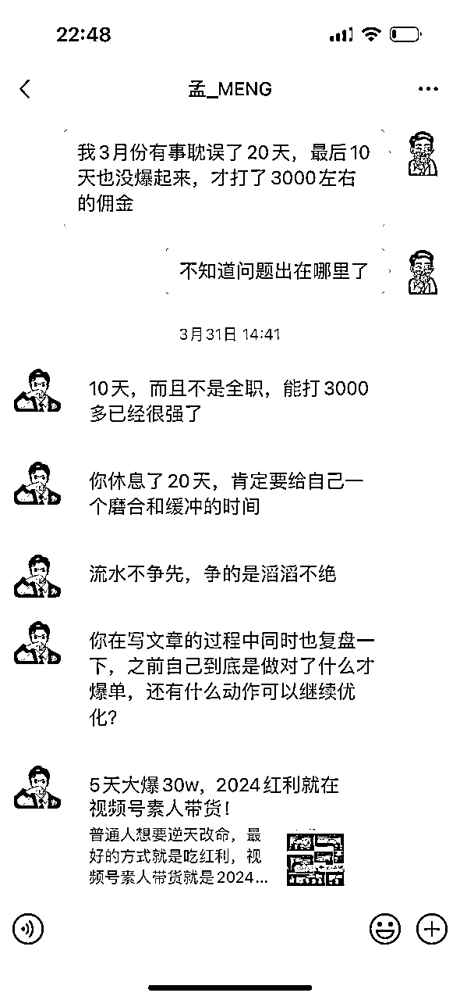
我醒悟了。
其实做什么项目，稳住自己，追求长期是最重要的。
我要做的，就是尽力把我能做到的做好，把我有限的时间价值，发挥到极致。
确实不需要过分焦虑！
之前总听人说，天赋是老天追着喂饭吃。
我一直也没有很明显的感觉。
但是孟总好几次提到说我在这方面有天赋，我发现我做起来确实很顺利。拍视频、直播，是我擅长的事情，我能做得很好。加上我之前无货源和小红书经历的磨练，我选品方面也很有优势。
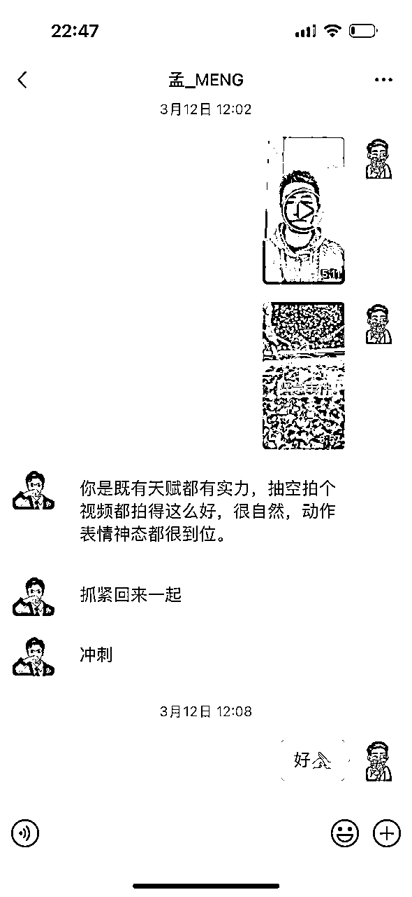
我做起来视频号带货确实非常顺利！
做自己擅长的，过上想要的自由的生活，真的很重要！
感谢孟总带我进入视频号项目，让我重新有了信心，并让我真正赚到了钱。
感谢我的团队小伙伴们，一直相互理解，相互支持，你们是我最好的伙伴！
感谢生财有术，提供了很好的平台，弥补了我的信息差，并让我找到新项目，让我能链接到那么好的资源，开始了属于我的生财之路。
最后，祝大家，生财有术！